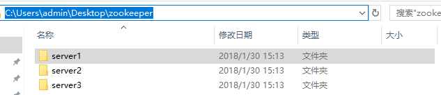
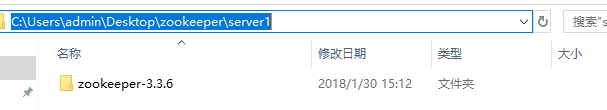
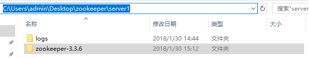
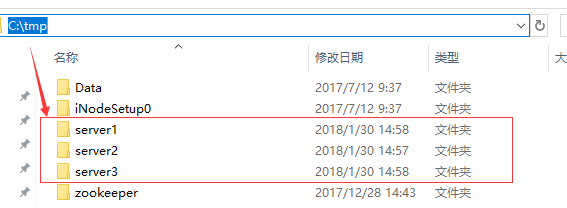
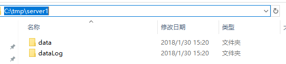
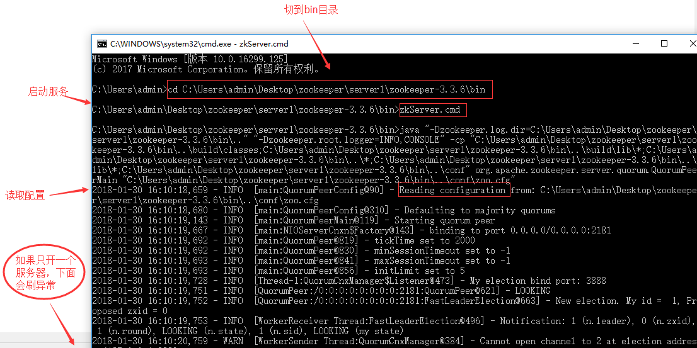
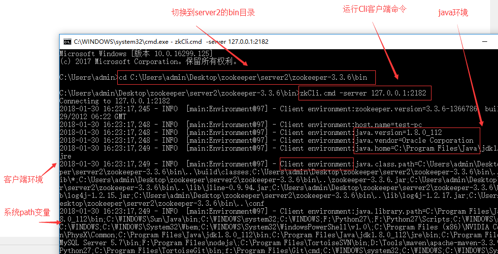
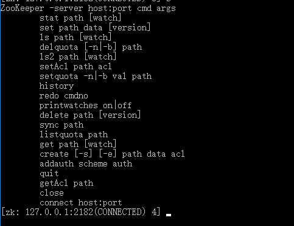

说明：简单尝试使用 windows10 搭建 zookeeper
（1）下载 zookeeper（地址见附录），解压下载后的 zookeeper-3.3.6.tar.gz。
（2）直接从桌面新建文件夹：zookeeper，在 zookeeper 文件夹下面新建 3 个子文件夹 server1、server2、server3，分别将上面解压的服务器复制一份过去，代表 3 个服务器。


（3）在每个 server 文件夹下创建文件夹：logs。

（4）修改配置文件，在每个 zookeeper-3.3.6\conf 目录下新建 zoo.cfg，每个 server 的修改如下（注意端口不要一致）：
server1：
tickTime=2000 | |
initLimit=5 | |
syncLimit=2 | |
dataDir=/tmp/server1/data | |
dataLogDir=/tmp/server1/dataLog | |
clientPort=2181 | |
server.1=127.0.0.1:2888:3888 | |
server.2=127.0.0.1:2889:3889 | |
server.3=127.0.0.1:2890:3890 |
server2：
tickTime=2000 | |
initLimit=5 | |
syncLimit=2 | |
dataDir=/tmp/server2/data | |
dataLogDir=/tmp/server2/dataLog | |
clientPort=2182 | |
server.1=127.0.0.1:2888:3888 | |
server.2=127.0.0.1:2889:3889 | |
server.3=127.0.0.1:2890:3890 |
server3：
tickTime=2000 | |
initLimit=5 | |
syncLimit=2 | |
dataDir=/tmp/server3/data | |
dataLogDir=/tmp/server3/dataLog | |
clientPort=2183 | |
server.1=127.0.0.1:2888:3888 | |
server.2=127.0.0.1:2889:3889 | |
server.3=127.0.0.1:2890:3890 |
注意这里面的路径，在第（5）步我们有创建。
（5）直接从 C 盘创建 tmp 文件夹，该文件夹下创建 3 个子文件加，如下

每一个 server 下创建 data 文件夹和 dataLog 文件夹，如下

在每个 data 文件夹下创建 myid 文件，注意不要后缀名，如下

server1 的 myid 文件里写 1，server2 的 myid 文件里写 2，server3 的 myid 文件里写 3（注意都是只写一个数字，然后保存）.
（6）此时我们切换到 server1 的 zookeeper 的 bin 目录，按住 win+R，打开 cmd 命令行，如下操作

开第一个服务器会有异常，不用理会，因为现在集群只起了 1 台 server，zookeeper 服务器端起来会根据 zoo.cfg 的服务器列表发起选举 leader 的请求，因为连不上其他机器而报错，当打开 server2 服务就好了。那么当我们起第二个 zookeeper 实例后，leader 将会被选出，从而一致性服务开始可以使用，这是因为 3 台机器只要有 2 台可用就可以选出 leader 并且对外提供服务 (2n+1 台机器，可以容 n 台机器挂掉)。
（7）接下来就可以使用了，我们来测试一下 2182 端口的服务，新打开一个 cmd 窗口

从下面光标处键入命令就可以了。

附录（参考地址）：
博客园：
http://www.blogjava.net/BucketLi/archive/2010/12/21/341268.html
CSDN：
http://blog.csdn.net/morning99/article/details/40426133
官方网站：
http://zookeeper.apache.org/doc/current/zookeeperStarted.html
Zookeeper 基本命令简介：
https://leehao.me/ZooKeeper 命令简介 /
zookeeper 官方镜像下载地址：
http://mirrors.hust.edu.cn/apache/zookeeper/
http://mirrors.hust.edu.cn/apache/zookeeper/zookeeper-3.3.6/ 我下载的是 3.3.6
zookeeper+tomcat+sorl 集群网上比较多，有时间尝试下